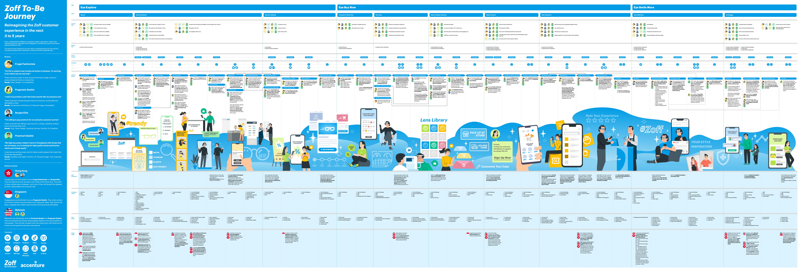
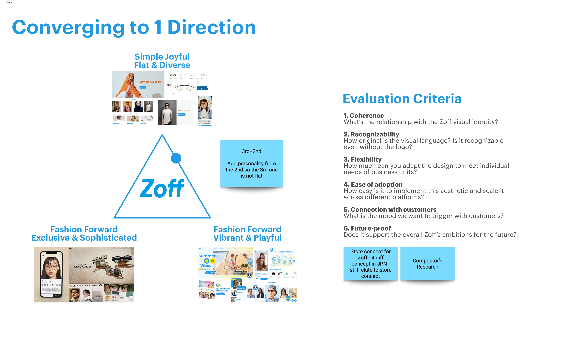
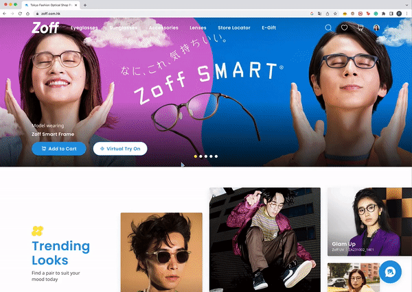

Zoff
My Role
XXXX
Duration:
4 months
Responsibilities:
Service Design, UI/UX Design, Design Language System
The Project
An introduction of the client and our deliverablesHigh-level Summary
Zoff is a popular Japanese Eyewear company that offers a large
variety of Japan quality eyewear at an affordable price.
Accenture was hired as Service Design consultants to help Zoff
explore how they can create a transformative and innovative
shopping experience for customers in South East Asia, both online
and at physical stores.
Our Deliverables
Together with other designers and technical consultants, we had the following responsibilities:
My Role and Contributions
For this project, I was a key designer that helped to spearhead the design process for the other designers. Some of my main responsibilities include:
- Created the visuals for the Customer Journey Map as part of the deliverables to the client.
- Collaborated with the Design and Technology teams to understand the product's functional requirements especially due to timeline constraints, and designed multiple iterations to cater to the different deliverable deadlines.
- Lead the developement, documentation and adherence of a comprehensive set of design guidelines, principles, and standards that define the visual language of the system.
Design Discovery
The initial research and synthesising our findingsCreating the User Personas
After conducting 30 interviews with people who wear glasses and conducting competitor analysis at physical stores in the different countries, we synthesised our findings to identify existing mindsets and mental models of eyewear shoppers. From this, we could then create the User Personas and come up with key opportunity areas.
The Service Design Concepts
With our user personas created, we then created an As-is customer journey to map out key opportunity areas, coming up with several Service Design concepts. We then further narrowed down to the following 5 main concepts to be adopted.


The Customer Journey Map
After creating the Service Design Concepts, we wrapped up the Discovery Phase by creating the envisioned Customer Journey Map for a customer at Zoff, incorporating the touch points of the various User Personas and the Service Design Concepts.
Design Direction
Converging on a new Zoff IdentityIngredient Boards
To help the client understand the evolving visual design
direction, we presented 3 different directions the brand could
take in the digital world. This would establish the overall mood,
direction and provide a set of high-level design principles that
serve as a starting point to develop the screens.
Each ingredient board contains components and elements that can
help differentiate Zoff from their competitors and promote a
unique brand identity Zoff can pursue.


Final Direction
We then evaluated the best design direction Zoff should pursue, which was to be a combination of the 2nd and 3rd explored Design Directions. With this in mind, the designers could then design and prototype the screens for the future e-commerce site of Zoff!
Prototyping
Some key screens I helped designAs part of the key deliverables of the project, the team had to create a high-fidelity, functional prototype to help the clients better envision the look and feel of Zoff's new digital identity! We created prototypes for both the desktop and mobile versions, incorporating our various Service Design concepts into the flows as well.
Landing Flow

Lenses Flow

Virtual Try On Flow

Staff Pick

Photo Try On